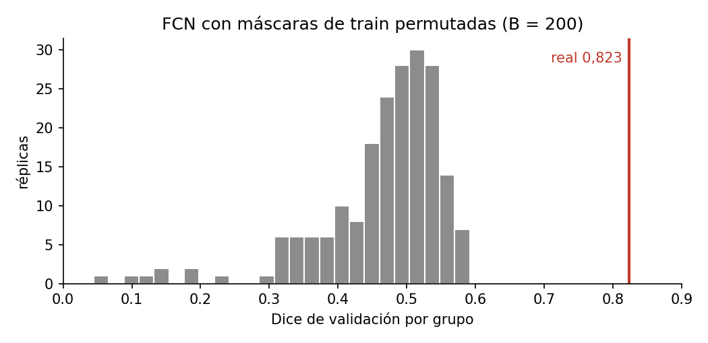

Entrenamientos complementarios#
Exploratorio, posterior a la exposición del test. Lo que exige volver a entrenar y el benchmark no cubría. Corrido
en una GPU L4 con colab/Complemento_Entrenamiento_E2.ipynb y scripts/complemento_entreno_e2.py, con el entorno y
el protocolo del benchmark (config/complemento_entreno_e2.json). Aquí no se carga el test: todo se mide en train o
en validación.
Prueba de sanidad: sobreajustar un lote#
Una implementación correcta debe poder memorizar un lote pequeño. Cada red se entrenó 500 pasos sobre el mismo lote fijo de 4 imágenes de train, con el optimizador y la pérdida de su receta, y se midió el Dice de esas 4 imágenes en modo evaluación. La regla, fijada antes de correr: pasa si el Dice medio del lote llega a 0,90; si no, se reporta tal cual, sin cambiar la receta.
Nueve de diez redes pasan, con Dice del lote entre 0,967 (SegNeXt-T) y 1,000 (U-Net++). VM-UNet no pasa (0,750). La tabla por imagen muestra dónde está el fallo:
Red |
image_0264 (3,0 %) |
image_0796 (13,4 %) |
image_1231 (1,1 %) |
image_1250 (13,2 %) |
Dice del lote |
Pasa |
Pérdida paso 1 → 200 → 500 |
|---|---|---|---|---|---|---|---|
U-Net++ R18 |
1,000 |
1,000 |
1,000 |
1,000 |
1,000 |
sí |
0,894 → 0,015 → 0,002 |
TransUNet |
0,999 |
1,000 |
1,000 |
0,999 |
1,000 |
sí |
0,809 → 0,024 → 0,007 |
DeepLabv3+ R18 |
0,994 |
1,000 |
0,993 |
1,000 |
0,996 |
sí |
0,821 → 0,011 → 0,005 |
SegNet compacta |
0,990 |
0,998 |
0,985 |
0,996 |
0,992 |
sí |
0,787 → 0,027 → 0,006 |
U-Net compacta |
0,981 |
0,993 |
0,981 |
0,995 |
0,988 |
sí |
0,837 → 0,018 → 0,006 |
PIDNet-S |
0,973 |
0,994 |
0,981 |
0,997 |
0,986 |
sí |
5,405 → 0,035 → 0,031 |
SegFormer-B0 |
0,969 |
0,996 |
0,964 |
0,996 |
0,981 |
sí |
0,729 → 0,041 → 0,025 |
FCN compacta |
0,969 |
0,996 |
0,955 |
0,994 |
0,978 |
sí |
0,811 → 0,026 → 0,016 |
SegNeXt-T |
0,956 |
0,993 |
0,924 |
0,993 |
0,967 |
sí |
0,774 → 0,131 → 0,048 |
VM-UNet |
1,000 |
1,000 |
0,000 |
1,000 |
0,750 |
no |
0,768 → 0,141 → 0,137 |
VM-UNet memoriza tres de las cuatro imágenes con Dice de 1,000 y en la cuarta, image_1231, no predice nada: Dice 0. Su promedio, 0,750, es exactamente (1 + 1 + 0 + 1) / 4. image_1231 es la del rótulo más pequeño del lote, alrededor del 1 % de una foto de 1000 × 1000, unos 25 × 25 píxeles tras reducirla a 256. Las otras nueve redes sí la aprenden (de 0,924 en SegNeXt-T a 1,000).
No es falta de pasos. La pérdida de VM-UNet baja hasta el paso 150 y desde el 200 queda plana (0,141 → 0,137 en los 300 pasos siguientes). Las demás redes siguen bajando hasta el final. La red quedó en un mínimo local en el que el rótulo pequeño se predice vacío.
Lectura. Una red mal conectada no memoriza tres imágenes con Dice de 1,000, así que el resultado no apunta a un error de implementación. Apunta a una dificultad de VM-UNet con objetos pequeños o a una optimización inestable, que encaja con su dispersión entre semillas en el test del benchmark (± 0,030, la segunda mayor de las diez después de SegNet). Una explicación posible, no probada, es que la reducción inicial de resolución deje un rótulo de ese tamaño en muy pocas celdas del mapa de rasgos. No se repitió con más pasos ni con otra semilla: la regla se fijó antes y la curva ya muestra que más pasos no cambian el resultado.
Ablación de TransUNet#
TransUNet fue la red con mejor Dice de validación del benchmark (0,853, media de cinco semillas), y por eso se eligió sin mirar el test. Se le quitó un componente a la vez y se reentrenó con las mismas cinco semillas y el mismo protocolo (SGD, 30 épocas como máximo, paciencia 5, sin pesos preentrenados): sin el Transformer del codificador (cero bloques de autoatención; quedan la ResNet-50, el decodificador y las tres conexiones de salto), sin las conexiones de salto (el decodificador solo recibe la salida del codificador) y con BCE sola en lugar de 0,5 BCE + 0,5 Dice. Son los contrastes que estudia el artículo de TransUNet (Chen et al., 2021): R50-U-Net frente a TransUNet y el número de saltos. La referencia son las cinco corridas de la red completa del benchmark, pareadas por semilla.
Variante |
Parámetros |
Dice val medio |
Diferencia |
IC95 t (semillas) |
p t, Holm |
p Wilcoxon |
IC95 bootstrap (grupos) |
Épocas |
|---|---|---|---|---|---|---|---|---|
TransUNet completa (benchmark) |
105,3 M |
0,853 |
— |
— |
— |
— |
— |
30 máx. |
Sin Transformer |
20,3 M |
0,861 |
0,007 |
[−0,001; 0,015] |
0,065 |
0,1250 |
[0,001; 0,014] |
27–30 |
Sin conexiones de salto |
103,8 M |
0,761 |
−0,092 |
[−0,105; −0,079] |
< 0,001 |
0,0625 |
[−0,109; −0,076] |
12–28 |
BCE sola (sin Dice) |
105,3 M |
0,816 |
−0,037 |
[−0,043; −0,031] |
< 0,001 |
0,0625 |
[−0,049; −0,026] |
18–30 |
Las conexiones de salto son el componente que más pesa: sin ellas el Dice cae 0,092, con un intervalo lejos del cero. Sin el detalle fino que traen del codificador, la red pierde el contorno de los rótulos. El término Dice de la pérdida aporta 0,037: con BCE sola, la red optimiza un criterio dominado por el fondo y queda más lejos del Dice que se mide. Al quitar el Dice también cambia la escala del gradiente y la tasa no se reajustó, porque la receta se mantuvo fija; parte de la caída puede venir de ahí.
El Transformer no aporta en estos datos. Sin él, el Dice no baja: sube 0,007, con un intervalo t entre semillas que incluye el cero (p de Holm 0,065), con una red cinco veces más chica (20,3 M parámetros frente a 105,3 M). El intervalo bootstrap por grupos excluye el cero, pero remuestrea los grupos con las semillas fijas y no recoge la variación entre semillas, que es la que aquí manda. La lectura prudente es que el Transformer no mejora a la U con ResNet-50: la ventaja de TransUNet en el benchmark viene de la ResNet-50 y de las conexiones de salto. Encaja con entrenar desde cero con 1.015 imágenes, pocas para que doce bloques de autoatención aprendan algo que las convoluciones no capten.
Con 5 pares, el Wilcoxon exacto no puede bajar de 0,0625: las dos variantes con caída tienen las cinco diferencias del mismo signo, que es lo máximo que la prueba puede mostrar con ese tamaño. La referencia viene de las corridas del benchmark y no de un control reentrenado en la misma sesión; con el mismo entorno, semillas y receta, la diferencia de ejecución entre sesiones es pequeña frente a las caídas observadas, pero no es cero.
Permutación de máscaras en train#
La prueba responde si el pipeline aprende la relación entre imagen y rótulo o solo regularidades que no dependen de ella. En cada réplica se barajaron las 1.015 máscaras de train entre imágenes y se reentrenó FCN compacta con el pipeline completo del benchmark (mismo orden de lotes que la semilla 11, 30 épocas como máximo, paciencia 5). La validación se midió con sus máscaras verdaderas. Se eligió FCN porque es la red más barata del benchmark; la versión con TransUNet (B = 19, por debajo del mínimo de la guía) no se corrió.
Pipeline |
B |
Dice val real |
Nula: mín. |
media |
mediana |
máx. |
p |
Épocas por réplica |
|---|---|---|---|---|---|---|---|---|
FCN compacta |
200 |
0,823 |
0,045 |
0,465 |
0,490 |
0,592 |
0,0050 |
6–24 (media 11,8) |


Figura 1 Dice de validación de las 200 réplicas con máscaras permutadas (gris) y de la FCN entrenada con sus máscaras (rojo).#
El Dice real es el de la FCN de semilla 11 del benchmark, la misma semilla que fija el orden de lotes de las réplicas. Ninguna de las 200 réplicas llega a él: p = 0,005, el mínimo posible con B = 200. La distribución nula no está en cero. Su media es 0,465. Con las máscaras barajadas, la red no puede aprender qué imagen va con qué rótulo, pero sí dónde suelen caer los rótulos y de qué tamaño son, y con eso ya solapa casi la mitad. Ese 0,465 es lo que el pipeline obtiene sin información de la imagen; el 0,823 real lo supera en 0,36.
Búsqueda de hiperparámetros#
El benchmark entrenó cada red con la receta de su artículo, sin búsqueda. La búsqueda mide cuánto depende la comparación de esa elección. Se probaron T = 4 configuraciones por red con el mismo presupuesto (10 épocas como máximo, paciencia 3, semilla 11). El intento 0 es la receta; los otros tres multiplican su tasa de aprendizaje por el mismo factor en las 10 redes, sorteado en escala logarítmica dentro de una década hacia cada lado, y fijan el weight decay. La elección se hace solo con validación.
Red |
Receta (t0) |
t1: lr × 0,1 |
t2: lr × 9,3 |
t3: lr × 1,19, sin wd |
Mejor − receta |
|---|---|---|---|---|---|
TransUNet |
0,813 |
0,742 |
0,814 |
0,805 |
0,001 |
VM-UNet |
0,801 |
0,750 |
0,009 |
0,758 |
0,000 |
U-Net++ R18 |
0,774 |
0,785 |
0,659 |
0,764 |
0,011 |
SegFormer-B0 |
0,660 |
0,540 |
0,782 |
0,668 |
0,122 |
SegNet compacta |
0,753 |
0,736 |
0,000 |
0,781 |
0,028 |
SegNeXt-T |
0,735 |
0,654 |
0,779 |
0,746 |
0,045 |
PIDNet-S |
0,756 |
0,656 |
0,737 |
0,778 |
0,022 |
FCN compacta |
0,753 |
0,710 |
0,667 |
0,771 |
0,019 |
U-Net compacta |
0,767 |
0,734 |
0,628 |
0,770 |
0,003 |
DeepLabv3+ R18 |
0,715 |
0,722 |
0,688 |
0,728 |
0,013 |
La receta es la mejor solo en VM-UNet. En TransUNet empata con t2 (0,813 frente a 0,814). En las otras ocho redes algún intento la supera, en seis de ellas por menos de 0,03, del orden de lo que mueve cambiar de semilla (la desviación entre semillas llega a 0,033 en el test del benchmark).
SegFormer-B0 es la excepción. Con la tasa multiplicada por 9,3 sube de 0,660 a 0,782 y pasa del último lugar a la mitad de la tabla. Su último lugar en el benchmark depende en buena parte de la receta, que fija una tasa baja (6 × 10⁻⁵, la de su artículo). SegNeXt-T mejora 0,045 por la misma vía.
Una tasa alta rompe dos redes. Con t2, SegNet compacta y VM-UNet colapsan a predecir fondo (Dice 0,000 y 0,009) y la paciencia las detiene en la época 4 o 5. VM-UNet también es la que no memorizó el lote en la prueba de sanidad: las dos pruebas apuntan a una optimización frágil.
Las dos primeras no cambian. TransUNet (0,814) y VM-UNet (0,801) siguen arriba con su mejor configuración.
Es exploratoria. Una semilla y 10 épocas favorecen las configuraciones que aprenden rápido y dejan ruido de semilla en la elección. El espacio cubre solo tasa y weight decay, los dos hiperparámetros comunes a los diez optimizadores, y no el lote, el dropout ni la profundidad. Reentrenar la configuración ganadora de cada red con cinco semillas y 30 épocas quedó diseñado (unas 17 h de L4) y no se corrió.
Cómputo#
Tiempo de GPU L4 sumado de los registros de cada corrida (resultados/complemento_entreno_e2/corridas.csv): ablación
7,4 h, permutación 3,8 h, búsqueda 3,9 h y sobreajuste 0,1 h; unas 15 h en total, repartidas en dos sesiones
paralelas.